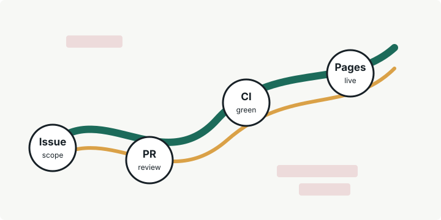

公開作業ログ
作業とTODO
Codexで進めたリポジトリ整備を見返しながら、次にやることをその場で書ける画面。入力したTODOは、このブラウザに保存される。

操作場所
よく使うリンク
リポジトリ、公開ページ、Actions、課題一覧、TODOメモへすぐ移動できる。
作業履歴
マージした作業
次
次にやると良いこと
公開はできた。ここからは、小さい機能を足して動かしながら育てると早い。
TODOメモ
ブラウザに残すメモ
まだメモなし。ひとつ書けば、ここが動き出す。
公開作業ログ
Codexで進めたリポジトリ整備を見返しながら、次にやることをその場で書ける画面。入力したTODOは、このブラウザに保存される。

操作場所
リポジトリ、公開ページ、Actions、課題一覧、TODOメモへすぐ移動できる。
作業履歴
次
公開はできた。ここからは、小さい機能を足して動かしながら育てると早い。
TODOメモ
まだメモなし。ひとつ書けば、ここが動き出す。